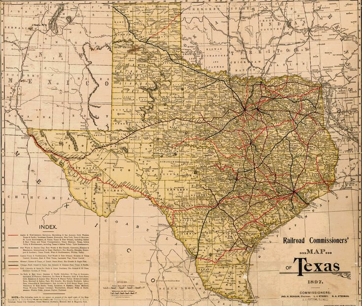

ETNSG, East Texas Neuro Support Group, is a 501(c)(3) not for profit organization dedicated to individuals with neurological conditions or disabilities. A neurological condition/disability affects the brain or nerves at any time in one's life, and includes (but is not limited to) spinal cord injury, traumatic brain injury, aneurysms, stroke, cerebral palsy, spina bifida, diabetic neuropathy, Parkinson's, and Alzheimer's etc. Over and against these diagnoses, we see the value in each person and welcome you to be a part of our membership. Visit our About link to learn more of ETNSG. Established in July 1998, our motto and mission is and has been simply, "People Helping People!"
Life is full of challenges in itself, and we seek to ease the burdens of these illnesses, encouraging (whenever possible and healthful) you to come join us. We accept members from any walk of life. Members do not pay dues nor fulfill any special obligations--all that is required is that you attend! A crucial aspect of our organization is peer mentoring and recreation--where we guide each other and have fun with one another in spite of our ailments. East Texas Neuro Support Group is dedicated to serving the interests of all members.
We post a calendar of events every year to update our members of the scheduled times to meet. These include online Zoom meetings and get-togethers at designated places. Whichever your preference, any and all events are open to attend. Additional information you would need to know about each event will be written on the calendar, which can be found on our Calendar webpage. To stay up to date, you might bookmark the calendar page once you arrive. At any rate, perhaps, before the event takes place, you may want to bring a friend--we gladly accept and welcome it!
If you would like to join, simply come to an event and make yourself known or email us! The Contact Us page will provide you with our email. As soon as possible, we will return your email and hopefully tell you a satisfactory answer to what you were asking. You can leave your name, phone number, and any sort of question you may have for us in the email. Additionally, any suggestions or help are welcome--just please contact us first, so that we can properly deal with that information. We are here to help you because we live on through, "People Helping People!"